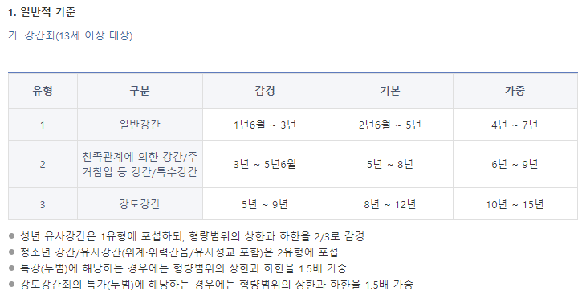
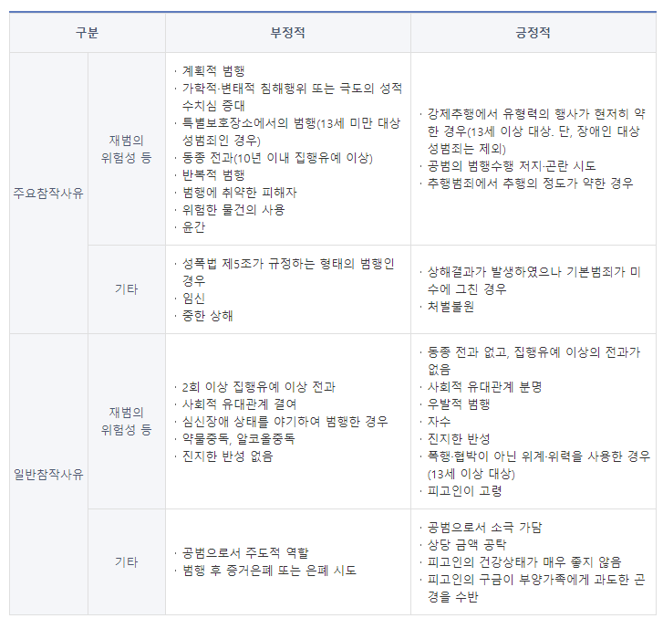

개인의 성적 자유를 침해하는 것을 내용으로 하는 범죄이다. 보호법익은 개인의 성적 자기결정의 자유(소극적 자유)이다. 보호의 정도는 침해범이며, 친고죄가 아니다.1
형법 제297조(강간)
폭행 또는 협박으로 사람을 강간한 자는 3년 이상의 유기징역에 처한다. <개정 2012.12.18>2
강간죄의 폭행 협박을 인정한 판례
- 피고인이 자택에서 피해자를 침대에 던지듯이 눕히고 체중을 이용해 팔다리를 제압한 경우 피해자의 반항을 억압하거나 현저히 곤란하게 할 정도의 유형력을 행사하였다고 인정된다. (2017도21249)
- 피고인이 여고생인 피해자를 여관방으로 유인한 후 방문을 걸어 잠근 후 피해자에게 성교할 것을 요구하였으나 피해자가 이를 거부하자 "옆방에 내 친구들이 많이 있다. 조용히 해라. 한 명하고 할 것이냐? 여러 명하고 할 것이냐?"라고 말하면서 성행위를 요구한 경우, 피고인이 피해자의 항거를 현저히 곤란하게 할 정도의 유형력을 행사한 사실이 인정된다. (2000도1914)
강간죄의 폭행 협박을 인정하지 않은 판례
기존에 친밀한 관계라고 추정될 만한 대화를 나눈 흔적이나 행동을 한 증거가 있는 경우 연인관계라고 추정하여 강간의 고의성을 잘 인정하지 않아왔다.(sns로 섹드립을 치거나 갈비탕 고기를 덜어주는 경우) 또한 범행이 모텔이나 집처럼 개인적으로 단둘이 있을 것으로 추정되는 공간이며 피해자가 저항 없이 들어간 것으로 추정될 경우 동의하지 않은 강간임을 입증하기가 매우 까다롭다. 성인여성 대상으로는 주로 가해자가 잠깐만 쉬다 가자며 피해자를 범행장소로 데려가고 돈이 없다며 모텔비를 피해자에게 지불하도록 종용한 뒤, 범죄를 저지르고 정작 재판장에선 피해자가 저항 없이 따라오는 CCTV를 증거로 제출하거나 범행장소의 임대비용을 피해자가 냈음을 주장한다. 또한 피해자와 같은 그룹에 속해있으나 서열상 우위에 있는 경우(상사, 선배 등) 범죄 후 뻔뻔하게 메세지를 보내 어떻게 응대해야 할지 모르고 충격받은 피해자 특유의 아무렇지 않은 척 보낸 메세지를 증거삼아 합의된 성관계였음을 주장하는 경우도 많다. 미성년 피해자 대상으로는 그루밍 성폭력이나 강간 후 의식주를 제공하여 합의된 성관계였다고 주장하는 식으로 이루어진다.(떡볶이를 화대라고 주장하는 식)
강간죄는 폭행·협박을 개시한 때에 실행의 착수가 인정된다. 강간을 위해 폭행·협박을 하였으나 성기의 삽입에 실패한 경우 강간죄의 미수범으로 처벌하며, 성기가 삽입되기 시작한 순간 강간죄의 기수가 된다. 성기가 전부 삽입될 것을 요하지는 않는다. 다만 여성기에 남성의 성기가 삽입되는 경우에 한하고, 여성기에 손가락이나 다른 기구를 삽입한 경우, 혹은 항문(남성의 항문 포함)에 남성기를 삽입한 경우에는 유사강간으로 처벌한다.


집행유예에 관한 항목을 추가해야 할지 고민하였으나 어차피 지식인에 질문하면 다 알려주므로 그냥 추가하였다. 형을 감경받을 목적으로 여성단체에 기부를 하고 목적이 달성되면 단체에 다시 돈을 돌려달라고 하는 것, 주변인의 탄원서를 통해 사회적 유대관계를 인정받기 위해 주변에 피해자를 음해하고 억울함을 호소하는 것, 진지한 반성의 증거로써 담당검사나 피해자에게 용서해 달라며 반성문과 편지를 수차례 보내는 것 모두가 저 참작사유들에서 기인한다.
유사강간과 강간의 경우 경찰청 범죄통계를 참고하였을때 매년 최소 5천건 이상 검거된다.5 애초에 신고를 하지 않았거나, 신고가 반려된 사건의 경우 포함되지 않는다.
| 형법 | 강간죄(297조), 유사강간죄(297조의 2) 강제추행죄(298조), 준강간·준강제추행죄(299조) 강간 등 상해·치상죄(301조), 강간 등 살인·치사죄(301조의 2) 미성년자간음죄(302조), 업무상 위력 등에 의한 간음죄(303조) 미성년자에 대한 간음, 추행죄(305조) |
| 성폭력범죄의 처벌등에 관한 특례법 | 특수강도강간 등(3조), 특수강간 등(4조), 친족관계에 의한 강간 등(5조), 장애인에 대한 강간·강제추행 등(6조), 13세 미만의 미성년자에 대한 강간·강제추행 등(7조), 강간 등 상해·치상(8조), 강간 등 살인·치사(9조), 업무상 위력 등에 의한 추행(10조), 공중 밀집 장소에서의 추행(11조), 성적 목적을 위한 다중이용장소 침입행위(12조), 통신매체를 이용한 음란행위(13조), 카메라 등을 이용한 촬영 및 촬영물·복제물의 반포 등(14조) |
| 아동·청소년의 성보호에 관한 법률 | 아동·청소년에 대한 강간·강제추행, 준강간·준강제추행, 위계·위력에 의한 간음·추행 등(7조), 아동·청소년에 대한 간음 등(8조), 강간 등 상해·치상(9조), 강간 등 살인·치사(10조), 아동·청소년이용음란물의 제작·배포 등(11조), 아동·청소년 매매행위(12조), 아동·청소년의 성을 사는 행위 등(13조), 아동·청소년에 대한 강요행위(14조), 아동·청소년의 성매매 알선영업행위(15조), 아동·청소년에 대한 합의 강요행위(16조), 온라인서비스제공자의 의무(17조), 신고의무자의 아동·청소년 대상 성범죄 가중처벌(18조) |
| 특정강력범죄의 처벌에 관한 특례법 | 특수강간죄와 강간치사상죄의 처벌에 관한 특례법(2조 1항 3호) 신상정보공개제도(8조의 2) |
1953년 강간죄를 다루고 있는 형법 32장은 '정조에 관한 죄'로 입법되었다가 1995년 '강간과 추행에 관한 죄'로 개칭되었다.
1994년 성폭력특별법이 제정되었다.
1997년 13세 미만 미성년자에 대한 성폭력을 비친고죄로 규정하였다.
2008년 아동·청소년 대상 성범죄를 비친고죄로 규정하였다.
2010년 조두순 사건으로 음주·약물로 인한 심신장애 상태에서 행한 성범죄는 형의 감경을 하지 않도록 바뀌었다.
2011년 장애인 대상 성범죄를 비친고죄로 규정하였다.
1953년 강간죄의 객체는 부녀였으나 2012년에 이르러 사람으로 확장되었다.
2013년 모든 성범죄의 친고죄 조항이 전면 폐지되었다.